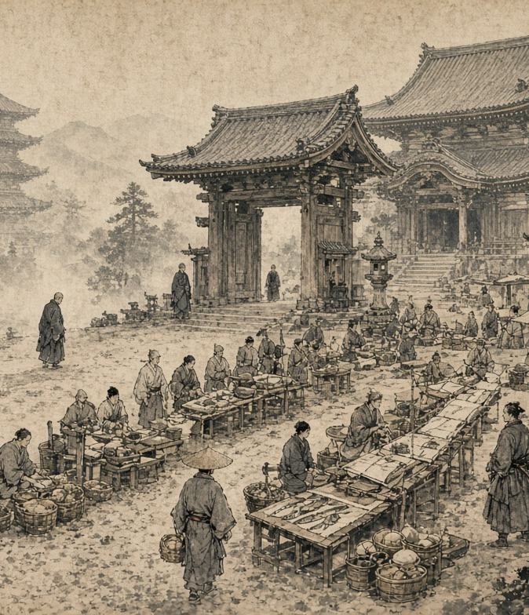

Храм-рынок
Храм является местом мира и спокойствия, но его территория может служить не только для молитв и духовной практики.
Храм является местом мира и спокойствия, но его территория может служить не только для молитв и духовной практики. Каждые две недели Сангха открывает ворота храма для торговцев, ремесленников и всех, кто хочет приобрести или продать товары в безопасном месте. В заранее объявленный день территория вокруг храма превращается в небольшой рынок. Торговцы занимают подготовленные места, жители приходят за покупками, а монахи следят за порядком и безопасностью.

Торговля на территории храма
Сам храм не занимается торговлей. Монахи не покупают и не продают товары, а лишь предоставляют место для проведения рынка. Торговцы могут продавать здесь различные разрешённые товары: еду, одежду, инструменты, предметы быта, ремесленные изделия и другие вещи, которые могут быть полезны жителям. Каждый торговец самостоятельно устанавливает цену и отвечает за свой товар.
Главное преимущество рынка - безопасность. Пока торговля проходит на территории храма, участники обязаны соблюдать порядок и не использовать рынок для конфликтов, ограблений или других нарушений.
Порядок и условия
Для участия торговец заранее обращается в храм и получает место для торговли. Сангха может ограничить количество торговцев, чтобы рынок не превращался в беспорядочную толпу. С каждой продажи небольшой процент может передаваться в казну храма. Эти средства используются для содержания монастыря, покупки необходимых вещей, помощи нуждающимся и проведения храмовых мероприятий. При этом монахи не вмешиваются в обычные торговые отношения. Они не устанавливают цены и не решают, насколько выгодной является сделка. Их задача - обеспечить порядок и безопасность территории. Если между торговцами возникает спор, они могут обратиться к монахам за помощью в качестве посредников. Однако Сангха не позволяет использовать рынок как место для мести или решения старых конфликтов.
Мир приходит изнутри. Не ищи его снаружи.Будда Шьякмуни